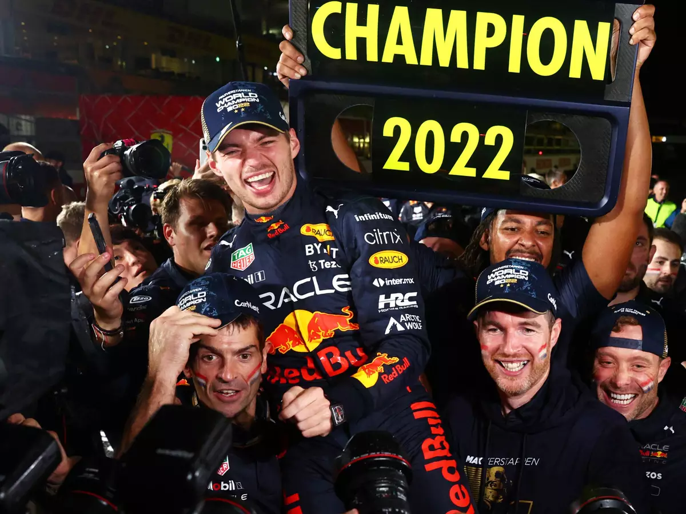
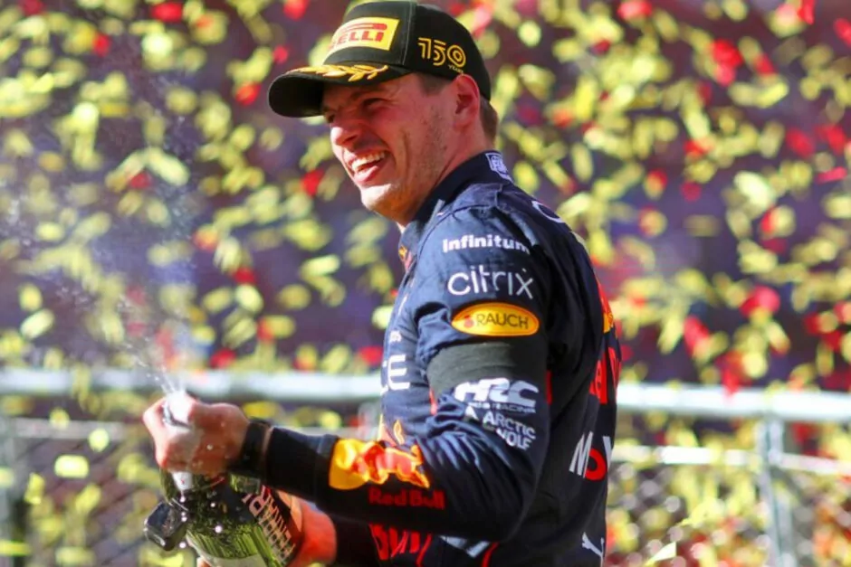
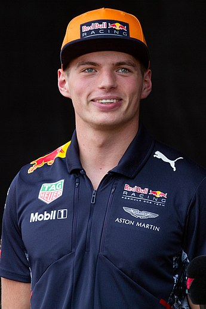

Campeonato Mundial de Fórmula 1 de 2022
O Campeonato Mundial de Fórmula 1 da FIA de 2022 foi a 73ª temporada do Campeonato Mundial de Fórmula 1, que é
reconhecido pela Federação Internacional de Automobilismo (FIA), o órgão regulador do automobilismo
internacional, como a mais alta categoria de competição para carros de corrida monopostos. O campeonato foi
disputado em 22 etapas, tendo iniciado no Barém, em 20 de março, e terminado nos Emirados Árabes Unidos, em 20
de novembro. Nesta temporada ocorreu a estreia do Grande Prêmio de Miami, realizado no Autódromo Internacional
de Miami. Equipes e pilotos competiram para serem campeões mundiais de construtores e de pilotos,
respectivamente.
Na temporada de 2022 foi introduzido mudanças significativas nos regulamentos técnicos do esporte.
Originalmente, essas mudanças deveriam ser introduzidas em 2021, mas foram adiadas para 2022 em resposta ao
impacto da pandemia de COVID-19.[1][2]
Em 9 de outubro de 2022, Max Verstappen venceu o Grande Prêmio do Japão em Suzuka, sagrando-se bicampeão mundial
de Fórmula 1.[3]


CLASIFICAÇÃO:
- Max Verstappen

Equipe: Red Bull Racing-RBPT
Max Emilian Verstappen (Hasselt,[3] 30 de setembro de 1997) é um automobilista neerlandês. Ele é piloto de
Fórmula 1 desde 2015, tendo feito sua estreia pela equipe Toro Rosso. Foi duas vezes campeão da Fórmula 1 em
2021 e 2022,[4][5] e terminou em terceiro lugar em 2019 e 2020 com a Red Bull Racing, equipe pela qual corre
desde 2016.[6][7]
É o piloto mais jovem a liderar uma volta durante um Grande Prêmio de Fórmula 1, o mais jovem vencedor de um
Grande Prêmio (18 anos 7 meses e 15 dias no Grande Prêmio da Espanha de 2016),[8] o mais jovem a alcançar o
recorde de volta mais rápida no Grande Prêmio do Brasil de 2016, o piloto mais jovem a alcançar o recorde de
voltas em uma sessão, este foi o terceiro treino livre no Autódromo Hermanos Rodríguez (México) em 28 de
outubro de 2017 e o piloto mais jovem a competir na história desta categoria, como ele fez sua estreia com
17 anos e 166 dias no Grande Prêmio da Austrália de 2015 para a equipe Scuderia Toro Rosso,[9] assim como o
primeiro piloto de nacionalidade neerlandesa a subir para o lugar mais alto do pódio da F-1.[8]
- Charles Leclerc

Equipe: Ferrari
Charles Marc Hervé Perceval Leclerc,[1] mais conhecido como Charles Leclerc, (Monte Carlo, 16 de outubro de
1997) é um piloto de automóveis monegasco que compete na Fórmula 1 pela equipe Ferrari.[2]
Integrou a Ferrari Driver Academy desde 2016,[3] e ganhou o campeonato da GP3 Series em 2016[4] e o
Campeonato de Fórmula 2 da FIA em 2017,[5] pela ART Grand Prix.
- Sergio Pérez

Equipe: Red Bull Racing-RBPT
Sergio Michel Pérez Mendoza (Guadalajara, 26 de janeiro de 1990) é um automobilista mexican que atua na
Formula 1 e atualmente faz parte da grade de pilotos da equipe Red Bull Racing.[2]
Em 18 de dezembro de 2020, Pérez foi anunciado como novo piloto da equipe Red Bull Racing para a temporada
de 2021 da Fórmula 1, substituindo Alexander Albon.[2]
Em 6 de junho de 2021, Pérez venceu a corrida no Grande Prêmio do Azerbaijão, após a batida do seu
companheiro de equipe, Max Verstappen, a cinco voltas do fim, provocada por um furo de pneu e também do
piloto da Mercedes, Lewis Hamilton, que havia passado reto na relargada à duas voltas pro final da
corrida.[27]
Em 29 de maio de 2022, Pérez venceu a corrida no Grande Prêmio de Mônaco e se tornou o primeiro mexicano a
vencer uma corrida em Mônaco e sendo o maior vencedor da história mexicana na Fórmula 1, superando as duas
vitórias de Pedro Rodríguez.[28]
Equipes Participantes
- Alfa Romeo F1 Team Orlen[4][5]
- Scuderia AlphaTauri
- BWT Alpine F1 Team[13]
- Aston Martin Aramco Cognizant F1 Team[1
- Scuderia Ferrari
- Haas F1 Team
- McLaren F1 Team
- Mercedes-AMG Petronas F1 Team[39]
- Oracle Red Bull Racing[43]
- Williams Racing
Mudanças nas equipes
A Honda optou por não dar continuidade ao seu programa de fornecimento de motores e deixará a Fórmula 1 após o
final da temporada de 2021.[57] Esta decisão levou a Red Bull a assumir o programa de motores da Honda e o
gerenciando internamente, criando uma nova divisão chamada Red Bull Powertrains para fornecer unidades de
potência para as equipes Red Bull e AlphaTauri.[45][46]
Mudanças nos pilotos
Antes do Grande Prêmio dos Países Baixos de 2021, Kimi Räikkönen anunciou sua intenção de se aposentar no final
da temporada de 2021, encerrando sua carreira na Fórmula 1 após 19 temporadas.[58] A vaga deixada por Räikkönen
na Alfa Romeo foi ocupada por Valtteri Bottas, que havia saído da Mercedes no final de 2021.[9] Com George
Russell substituindo Bottas,[59][60] desocupando seu assento na Williams que foi preenchido por Alexander
Albon.[61]
O piloto de Fórmula 2 Guanyu Zhou foi promovido para a Fórmula 1 pela equipe Alfa Romeo, no lugar de Antonio
Giovinazzi,[62] que deixou a equipe no final de 2021.[63] Zhou se tornou no primeiro piloto chinês a competir na
Fórmula 1.[62]
Nikita Mazepin deveria competir originalmente pela Haas pelo segundo ano consecutivo. Porém, em razão a invasão
russa da Ucrânia, seu contrato foi rescindido.[64] Com Kevin Magnussen assumindo o lugar de Mazepin na equipe
estadunidense.[32]
Mudanças no meio da temporada
Antes do Grande Prêmio do Barém, Sebastian Vettel testou positivo para a COVID-19. Ele foi substituído na Aston
Martin pelo piloto reserva Nico Hülkenberg, que havia corrido pela última vez no Grande Prêmio de Eifel de 2020,
pilotando pela equipe Racing Point.[24]
Resultados:
| Corrida |
Vencedor |
Equipe |
Grande Prêmio do Barém |
Charles Leclerc |
Ferrari |
| Grande Prêmio da Arábia Saudita |
Max Verstappen |
Red Bull Racing-RBPT |
| Grande Prêmio da Austrália |
Charles Leclerc |
Ferrari |
| Grande Prêmio da Emília-Romanha |
Max Verstappen |
Red Bull Racing-RBPT |
| Grande Prêmio de Miami |
Max Verstappen |
Red Bull Racing-RBPT |
| Grande Prêmio da Espanha |
Max Verstappen |
Red Bull Racing-RBPT |
| Grande Prêmio de Mônaco |
Sergio Perez |
Red Bull Racing-RBPT |
| Grande Prêmio do Azerbaijão |
Max Verstappen |
Red Bull Racing-RBPT |
| Grande Prêmio do Canadá |
Max Verstappen |
Red Bull Racing-RBPT |
| Grande Prêmio da Grã-Bretanha |
Carlos Sainz Jr. |
Ferrari |
| Grande Prêmio da Áustria |
Charles Leclerc |
Ferrari |
| Grande Prêmio da França |
Max Verstappen |
Red Bull Racing-RBPT |
| Grande Prêmio da Hungria |
Max Verstappen |
Red Bull Racing-RBPT |
| Grande Prêmio da Bélgica |
Max Verstappen |
Red Bull Racing-RBPT |
| Grande Prêmio dos Países Baixos |
Max Verstappen |
Red Bull Racing-RBPT |
Grande Prêmio da Itália |
Max Verstappen |
Red Bull Racing-RBPT |
| Grande Prêmio de Singapura |
Sergio Perez |
Red Bull Racing-RBPT |
| Grande Prêmio do Japão |
Max Verstappen |
Red Bull Racing-RBPT |
| Grande Prêmio dos Estados Unidos |
Max Verstappen |
Red Bull Racing-RBPT |
| Grande Prêmio da Cidade do México |
Max Verstappen |
Red Bull Racing-RBPT |
| Grande Prêmio de São Paulo |
George Russell |
Mercedes |
| Grande Prêmio de Abu Dhabi |
Max Verstappen |
Red Bull Racing-RBPT |
Fontes:
Campeonato Mundial de Fórmula 1 de 2022
Max Verstappen
Charles Leclerc
Sergio Pérez